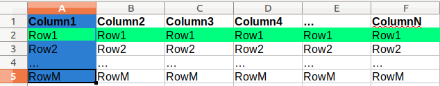

HW4: due Friday (lock date is still Saturday 11PM to encourage you to focus on Final Project)
let finalScore = max(.15 * FP Score + .15 * Exam 2 Score,
.30 * FP Score)This also means Final Project is due next Friday. Do not put it off. (and have fun!)
// Bug 1: Missing async in function header
async function getItemData(itemPath) {
let itemName = path.basename(itemPath);
let formattedName = formatTitleCase(itemName);
// Bugs 2 and 3: Missing utf8 and not using promisfied fs.readFile
// let contents = await fs.readFile(itemPath + "/info.txt");
let contents = await readFile(itemPath + "/info.txt", "utf8");
// Bug 4: Need to split contents by \n newline character.
let lines = contents.split("\n");
let description = lines[0]; // Bubbles.
let qty = lines[1]; // 10
let img = lines[2]; // tea.png
// Bug 5: "-" is invalid variable name syntax. Change to camelCase.
let inStock = qty > 0; // let in-stock = qty > 0;
let result = {
"name" : formattedName,
"image" : img,
"description" : description,
"in-stock" : inStock
};
return result;
}JS
Solution (starter files provided in Pre-Check link)
From Pre-Check: What are the differences between implementing GET vs. POST Endpoints in Express?
app.post instead of app.getmulter module to handle FormData POST requestsreq.body.paramName instead of req.params/req.query/addItem POST endpointNote: You can find example documentation for a POST endpoint here
<form id="item-form">
<p>
<label for="category">Category: </label>
<input type="text" name="category" required />
</p>
<p>
<label for="item-name">Item Name: </label>
<input id="item-name" name="name" type="text" required />
</p>
<p>
<label for="images">Item Image:</label>
<select id="images" name="image">
<option value="">-- choose an image --</option>
</select>
</p>
<p><label for="description">Description: </label></p>
<textarea id="description" name="description" minlength=10 rows=5 cols=40></textarea>
<button id="add-item">Add Item!</button>
</form>HTML
function addItem() {
let params = new FormData(id("item-form"));
fetch("/addItem", { method : "POST", body : params })
.then(checkStatus)
.then(resp => resp.text())
.then(displaySuccess)
.catch(handleError);
}JS
1. To add a POST endpoint, use app.post instead of app.get
app.post("/addItem", (req, res) => {
...
});JS
2. Use the multer module to access POST parameters sent through a FormData request
3. Use the multer().none() (required to specify no file-uploading) and 2 other middleware functions built-in to Express for other POST request types
const multer = require("multer");
// for parsing application/x-www-form-urlencoded
app.use(express.urlencoded({ extended: true })) // built-in middleware
// for parsing application/json
app.use(express.json()); // built-in middleware
// for parsing multipart/form-data (required with FormData)
app.use(multer().none()); // multer middleware
app.post("/addItem", (req, res) => {
...
});JS
Remember to run npm install multer in any project that uses it.
With GET endpoints, we've used req.params and req.query to get endpoint parameters passed
in the request URL.
But remember that POST requests send parameters in the Request body, not in the URL.
app.post("/addItem", (req, res) => {
let name = req.params.name; // this doesn't work!
let name = req.query.name; // this also doesn't work!
...
});JS
req.body contains key-value pairs of data submitted in the request body. By default, it is undefined, and is populated when you use body-parsing middleware such as multer().none(), express.json() or express.urlencoded().
...
app.post("/addItem", (req, res) => {
let item = req.body.name;
let category = req.body.category;
let description = req.body.description;
...
// validate parameters, then update <category>-additions.json file with new data
...
});JS
/addItem
/**
* Adds a new item to the <category>-proposals.json file to be approved later.
* If no <category>-proposals.json yet exists, will add a new file.
* Required POST parameters: name, category, description.
* Optional POST parameter: image - defaults to food.png otherwise.
* Response type: text/plain
* Sends a 400 error if missing one of the 3 required params.
* Sends a 500 error if something goes wrong in file-processing.
* Sends a success message otherwise.
*/
app.post("/addItem", async (req, res) => {
...
});/addItem
// Adds a new item to the menu.
// Required POST parameters: category, name, description
// Optional POST parameter : image - (defaults to food.png otherwise)
app.post("/addItem", (req, res) => {
// 1. validate parameters.
// - If one of the 3 required are missing, send a 400 error message.
// 2. Otherwise, if no image parameter is sent, set to food.png
// 3. Create JSON with each parameter:
// { name, description, image}
// 4. Read <category>-proposals.json (create if doesn't exist),
// add new JSON to the array.
// 5. Write new JSON to >category>-proposals.json.
});JS
/addItemapp.post("/addItem", async (req, res) => {
res.type("text");
// 1. validate parameters.
// - If one of the 3 required are missing, send a 400 error message.
let name = req.body.name;
let category = req.body.category;
let description = req.body.description;
let image = req.body.image;
if (!(name && category && description)) {
res.status(400).send("Missing POST parameter: category, name, and/or description");
}
// 2. Otherwise, if no image parameter is sent, set to food.png
if (!image) {
image = DEFAULT_IMAGE;
}
// 3. Create JSON with each parameter:
let result = { "name" : name, "description" : description, "image" : image };
// 4. Read <category>-proposals.json, then add new JSON to the array.
// Fresh Fruit -> fresh-fruit
let dashedCategory = category.toLowerCase().replace(" ", "-");
let jsonFile = dashedCategory + "-proposals.json";
try {
let contents = await readFile(jsonFile, "utf8");
} catch (err) {
if (err.code !== "ENOENT") { // file-not-found error
res.status(500).send(SERVER_ERROR);
} // else continue, writing a new <category>-proposals.json file.
}
contents = JSON.parse(contents);
contents.push(result);
// 5. Write new JSON to same file.
try {
await writeFile(jsonFile, JSON.stringify(contents), "utf8");
} catch (err) {
res.status(500).send(SERVER_ERROR);
}
res.send(req.body.name + " proposal successfully added to " + jsonFile + "!");
});JS
app.post instead of app.getreq.body.paramname instead of req.params.paramname/req.query.paramnamemulter (non-core) module with the rest of your modulesfetch and FormData in client-side JS (similar to HW3) - remember you can't test POST requests in the URL!
We have seen how to store data using .txt, .json, and directory structures.
On the server, we have a lot of functionalitity to access the file system
But as you saw in the pre-check, processing files and directories can get a bit tedious
Writing files can also be a bit tedious, and it's easy to accidentally overwrite data.
What if we want to update the file?
The final topic we will cover in this course is using databases as a powerful (and easy) way to manage our data.
(there's no such thing as too much Pokémon...)
function filterJSON(pokemonJSON) {
let pokemon = pokemonJSON.pokemon;
let filtered = [];
// filter out only the Pokemon we want
for (let i = 0; i < pokemon.length; i++) {
let data = pokemon[i];
if (data.weakness === "rock" &&
data.name.indexOf("r") !== -1 &&
data.id < 145) {
filtered.push(
{ "name" : data.name, "type" : data.type,
"id" : data.id, "weakness" : data.weakness });
}
}
// Sort (descending by name alphabetically)!
for (let i = filtered.length - 1; i >= 0; i--) {
for (let j = 1; j <= i; j++) {
let firstPokemon = filtered[j - 1];
let secondPokemon = filtered[j];
if (firstPokemon.type > secondPokemon.type ||
firstPokemon.type === secondPokemon.type &&
firstPokemon.name < secondPokemon.name) {
let temp = firstPokemon;
filtered[j - 1] = secondPokemon;
filtered[j] = temp;
}
}
}
let result = { "pokemon" : filtered };
return result;
}What are some limitations of filtering out the data in JSON?
function filterJSON(pokemonJSON) {
let pokemon = pokemonJSON["pokemon"];
let filtered = [];
for (let i = 0; i < pokemon.length; i++) {
let data = pokemon[i];
if (data.weakness === "rock" &&
data.name.indexOf("r") !== -1) && data.id < 145) {
filtered.push(
{ "name" : data.name, "type" : data.type,
"id" : data.id, "weakness" : data.weakness });
}
}
let length = filtered.length;
for (let i = length - 1; i >= 0; i--) {
for (let j = 1; j <= i; j++) {
let firstPokemon = filtered[j - 1];
let secondPokemon = filtered[j];
if (firstPokemon.type > secondPokemon.type ||
firstPokemon.type === secondPokemon.type &&
firstPokemon.name < secondPokemon.name) {
let temp = firstPokemon;
filtered[j - 1] = secondPokemon;
filtered[j] = temp;
}
}
}
let result = { "pokemon" : filtered };
return result;
}JS
The following code does everything (without JSON/JS) asked in the warmup problem!
()
SELECT name, id, type, weakness
FROM pokemon
WHERE id < 145 AND name LIKE '%a%' AND weakness = 'rock'
ORDER BY type, name DESC;SQL
let qry = "SELECT name, id, type, weakness FROM pokedex " +
"WHERE name LIKE '%r%' AND id < 145 AND weakness = 'rock' " +
"ORDER BY type, name DESC";
let rows = await db.query(filterQuery);
console.log(JSON.stringify(rows));
// [{"name":"Articuno","id":144,"type":"ice","weakness":"rock"}]Node.js
You can find the full solution here which uses the promise-mysql module we will learn on Wednesday.
Relational Database: A method of structuring data as tables associated by shared attributes
A table row corresponds to a unit of data called a record; a column corresponds to an attribute of that record
In Excel speak:

In the above image, the cells highlighted blue are the first "column" and the cells highlighted green are of the first "row", or "record"
SQL tables can be visualized just like an Excel sheet, just with different terminology, and more programmatic capabilities.
(Insert happy/sad face here depending on your feels)
You can also now appreciate some of this...
A collection of related information, similar to JSON (but more tabular)
What are some examples of data you could store in a database?
Databases give us a great improvement in the way we can build, process, and retrieve large datasets. Most software companies will have a large group dedicated to database management.
Advantages of a database:
Microsoft SQL Server (powerful) and Microsoft Access (simple)
PostgreSQL (powerful/complex free open-source database system)
SQLite (transportable, lightweight free open-source database system)
MySQL (simple free open-source database system)
| id | name | platform | release_year | genre | publisher | developer | rating |
|---|---|---|---|---|---|---|---|
| 1 | Pokemon Red/Blue | GB | 1996 | Role-Playing | Nintendo | Nintendo | E |
| 2 | Spyro Reignited Trilogy | PS4 | 2018 | Platform | Activision | Toys for Bob | E |
| 3 | Universal Paperclips | PC | 2017 | World Domination | Frank Lantz | Frank Lantz | E |
| ... | ... | ... | ... | ... | ... | ... | ... |
You can test queries with this Games table here
Note: We'll be practicing basic queries from this dataset today, but you'll learn how to setup your own MySQL database with MAMP/phpMyAdmin in section!
SELECT name FROM menu WHERE qty > 0;INSERT into menu (name, category, qty, image)
VALUES ("Cookie", "Desserts", 154, "cookie.png");SQL (menu table)
Structured Query Language (SQL): A language for searching/updating a database.
A standard syntax that is used by all database software (with minor variations). Generally case-insensitive.
A declarative language: describes what data you are seeking, not exactly how to find it.
These are the basic "building-blocks" of forming "questions" (queries) in SQL
SELECT StatementSyntax:
SELECT column(s) FROM table;Example:
SELECT name, release_year FROM Games;Example output:
| name | release_year |
|---|---|
| Pokemon Red/Blue | 1996 |
| Spyro Reignited Trilogy | 2018 |
| Universal Paperclips | 2017 |
| Super Mario Bros. | 1985 |
| ... | ... |
The SELECT
statement is used to select data from a database and returns the data in a result table containing the row data
for column name(s) written after SELECT filter. Table and column names are case-sensitive.
DISTINCT ModifierSyntax:
SELECT DISTINCT column(s) FROM table;SQL
The DISTINCT eliminates duplicates from the result set.
Example (without DISTINCT):
SELECT release_year
FROM Games;| release_year |
|---|
| 1996 |
| 2018 |
| 2017 |
| 1985 |
| 1996 |
| 2008 |
| ... |
Example (withDISTINCT):
SELECT DISTINCT release_year
FROM Games;| release_year |
|---|
| 1996 |
| 2018 |
| 2017 |
| 1985 |
| 2008 |
| ... |
WHERE StatementSyntax:
SELECT column(s) FROM table WHERE condition(s);Example:
SELECT name, release_year FROM Games WHERE genre = 'puzzle';Example result:
| name | release_year |
|---|---|
| Tetris | 1989 |
| Brain Age 2: More Training in Minutes a Day | 2005 |
| Pac-Man | 1982 |
| ... | ... |
The WHERE clause filters out rows based on their columns' data values. In large databases, it's critical to use a WHERE clause to reduce the result set in size.
Suggestion: When trying to write a query, think of the FROM part first, then the WHERE part, and lastly the SELECT part.
WHERE ClauseSyntax:
WHERE column operator value(s)Example:
SELECT name, release_year
FROM Games
WHERE release_year < 1990;Example result:
| name | release_year |
|---|---|
| Super Mario Bros. | 1985 |
| Tetris | 1989 |
| Duck Hunt | 1984 |
| ... | ... |
The WHERE portion of a SELECT statement can use the
following properties:
BETWEEN min AND maxLIKE patternIN (value, value, ..., value)Write a SQL query that returns the name and platform of all games with a release_year before 2000.
WHERE Clauses: AND, ORExample:
SELECT name, release_year FROM Games
WHERE release_year < 1990 AND genre='puzzle';Example result:
| name | release_year |
|---|---|
| Tetris | 1989 |
| Pac-Man | 1982 |
| Dr. Mario | 1989 |
| ... | ... |
Multiple WHERE conditions can be combined using AND or OR.
LIKESyntax:
WHERE column LIKE patternExample:
SELECT name, release_year FROM Games
WHERE name LIKE 'Spyro%'Example results:
| name | release_year |
|---|---|
| Spyro Reignited Trilogy | 2018 |
| Spyro the Dragon | 1998 |
| Spyro: Year of the Dragon | 2000 |
| Spyro 2: Ripto's Rage | 1999 |
| ... | ... |
LIKE 'text%' searches for text that starts with a given prefixLIKE '%text' searches for text that ends with a given suffixLIKE '%text%' searches for text that contains a given substringNote: In MySQL, the text in the LIKE string is case-insensitive.
ORDER BYSyntax:
SELECT column(s) FROM table
ORDER BY column(s) ASC|DESC;Example (ascending order by default):
SELECT name FROM Games
ORDER BY name| name |
|---|
| '98 Koshien |
| 007 Racing |
| 007: Quantum of Solace |
| 007: The World is not Enough |
| ... |
Example (descending order):
SELECT name FROM Games
ORDER BY name DESC| name |
|---|
| Zyuden Sentai Kyoryuger: Game de Gaburincho |
| Zwei |
| Zumba Fitness: World Party |
| Zumba Fitness Rush |
| ... |
The ORDER BY keyword is used to sort the result set in ascending or descending order (ascending if not specified)
LIMITSyntax:
LIMIT numberExample:
SELECT name FROM Games
WHERE genre='puzzle'
ORDER BY name
LIMIT 3;Example result:
| name |
|---|
| 100 All-Time Favorites |
| 101-in-1 Explosive Megamix |
| 3D Lemmings |
LIMIT can be used to get the top-N of a given category. It can also be useful as a sanity check to make sure you query doesn't return 100000 rows.
Write a SQL query that returns the 'name' and 'genre' of all games that have the word 'dragon' in them, ordered by 'release_year'.
Tomorrow: POST practice with typing test API and SQL query practice
Wednesday: The Node.js + SQL Connection!
SQLZoo has multiple exercises (with built-in databases you don't need to worry about setting up) for practicing SELECT, WHERE, ORDER BY, LIMIT, LIKE, etc. We recommend you go through these for additional practice!